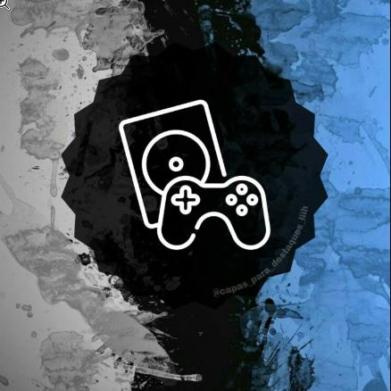
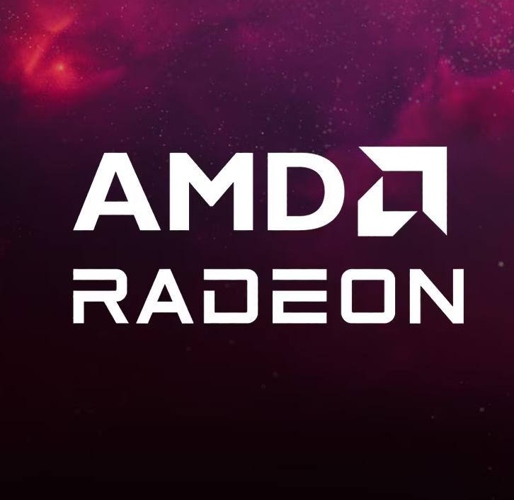
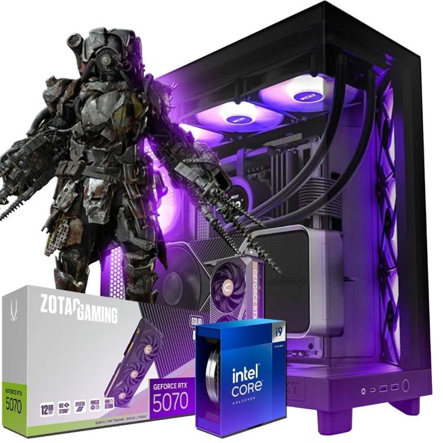

Notícias

Setembro de 2026 tem uma das janelas de lançamentos mais cheias do ano
Depois de um agosto mais tranquilo, setembro chegou com uma leva grande de jogos para PC e consoles. Entre os destaques estão Marvel's Wolverine, novo jogo da Insomniac Games com exclusividade para PS5, chegando dia 15; e Onimusha: Way of the Sword, que traz de volta a franquia da Capcom após duas décadas, disponível desde o dia 4 para PS5, Xbox Series, Nintendo Switch 2 e PC. O mês ainda reserva EA Sports FC 27, NBA 2K27 e Silent Hill: Townfall, entre outros títulos aguardados.

AMD anuncia novidades de hardware para computadores
Durante uma feira de tecnologia recente, a AMD apresentou atualizações no seu catálogo de processadores para desktop, incluindo novos modelos com a tecnologia 3D V-Cache (que aumenta o desempenho em jogos) e a expansão da placa de vídeo Radeon RX 9070 GRE para outros mercados. A empresa também confirmou que vai manter suporte e novos lançamentos para o soquete AM5 até 2029, dando mais tempo de vida útil para quem monta um PC com essa plataforma hoje.

Disputa entre placas de vídeo segue acirrada em 2026
O mercado de placas de vídeo está mais competitivo do que nunca entre Nvidia e AMD. A Nvidia lançou a RTX 5090 como sua opção mais potente, voltada para quem busca desempenho máximo em 4K, enquanto a AMD trouxe a RX 9070 XT com boa aceitação no mercado intermediário. Do lado da Nvidia, também chamou atenção a RTX 5070, que ficou popular rapidamente por oferecer desempenho próximo ao da geração anterior top de linha por um preço mais competitivo — ainda que modelos com pouca memória de vídeo (VRAM) tenham recebido críticas da imprensa especializada.